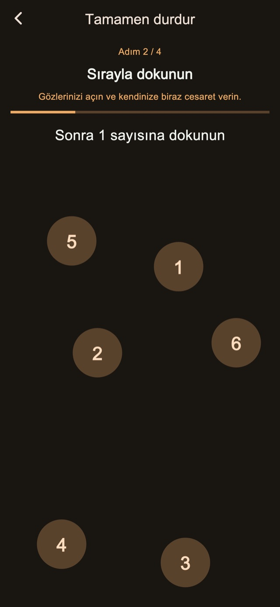
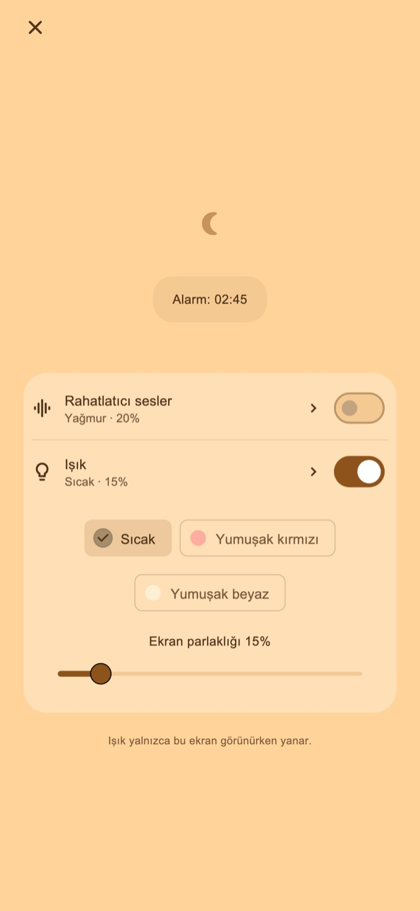

Rahatlatıcı sesler
Yağmur, dalga veya beyaz gürültü dinle. Ses yalnızca sen açınca başlar ve ilk alarma doğru azalarak durur.
Şekerlemeler ve çocuğunu uyuttuktan sonra kalkmak için titreşimli alarm
Kısa uykusu uzayanlara ve çocuğunu uyuturken uyuyakalanlara.
01Titreşim desenleri
Değişen süre ve ritimler, günlük bildirimlerinden farklı hissettirir. Bu alışılmadık his, alarmı fark edip uyanmana yardımcı olması için tasarlandı.
Kısa ve uzun darbeler, hızlı tekrarlar. Dört temel moddan birini seç: rastgele, bildirim tarzı, çoğunlukla uzun veya çoğunlukla kısa. Süre ve aralıklar ritmi değiştirir. Alarmı kurmadan önce deneyebilirsin.
Titreşim desenleri
02Birden çok uyarı
Sonrakileri korumak için yalnızca mevcut uyarıyı durdur veya kalanları iptal etmek için diziyi bitir.
Sayıyı ve aralığı kaydetmek Premium özelliğidir.
Birden çok uyarı
Kalkınca bitir
03Durdurma görevleri
Hesap soruları, sayılara sırayla dokunma, basılı tutma ve tekrar dokunma durdurma ve ertelemeye eşlik eder. Standart adımlar dahildir. Adımları düzenlemek ve birleştirmek Premium gerektirir.

Gece ekranı
Parlaklığı ve saat görünümünü ayarla. Bir süre işlem yapılmadığında görüntüyü gizleyebilir, dokunarak saat ve kontrolleri yeniden gösterebilirsin.
Örneğin 30 dakika gibi bir süre veya kalkma saati seç.
Gece ekranını açık tut; istersen ses veya ışığı aç.
Durdurma adımlarını tamamla ve kalktığında diziyi bitir.
Rahatlatıcı ses ve ışık
Şekerleme yaparken veya çocuğunu uyuturken, ihtiyaç duyduğunda gece ekranından aç.
Yağmur, dalga veya beyaz gürültü dinle. Ses yalnızca sen açınca başlar ve ilk alarma doğru azalarak durur.
Sıcak, açık kırmızı veya yumuşak beyaz ışık seç ve parlaklığı ayarla.
Temel özellikler ücretsiz

Ücretsiz / Premium
Dört titreşim modu, standart durdurma ve erteleme, gece ekranı, sesler ve ışık dahildir. Bazı ekranlarda reklam gösterilir.
| Özellik | Ücretsiz | Premium |
|---|---|---|
| Titreşim desenleri | ✓ | ✓ |
| Birden çok uyarı | Standart ayarlar | Özelleştirilebilir |
| Durdurma görevleri | Standart ayarlar | Özelleştirilebilir |
| Gece ekranı / Rahatlatıcı sesler / Işık | ✓ | ✓ |
| Kendi titreşimlerini oluştur ve düzenle. | — | ✓ |
| Tüm reklamları kaldır. | — | ✓ |
Aylık plan veya tek seferlik satın alma seçebilirsin. Aylık plan otomatik yenilenir; mağaza hesabı ayarlarından yönetebilir veya iptal edebilirsin. Fiyat ve koşulları satın alma ekranında kontrol et.
Sık sorulan sorular
Uygulamanın özel titreşimlerini kullanmak için alarmı kurduktan sonra gece ekranını açık tut. Yan düğmeyle kilitler veya başka bir uygulamaya geçersen titreşimi iOS yönetir; seçtiğin özel ritim ve güç uygulanmaz. İzinleri ve cihaz titreşim ayarlarını kontrol edip kullanmadan önce çalışmasını dene.
Yağmur, dalga veya beyaz gürültü dinle. Ses yalnızca sen açınca başlar ve ilk alarma doğru azalarak durur. Sıcak, açık kırmızı veya yumuşak beyaz ışık seç ve parlaklığı ayarla.
Dört titreşim modu, standart durdurma ve erteleme, gece ekranı, sesler ve ışık dahildir. Bazı ekranlarda reklam gösterilir. Tüm reklamları kaldır. Uyarı sayısını ve aralığını değiştir. Durdurma ve erteleme adımlarını düzenle. Kendi titreşimlerini oluştur ve düzenle. Aylık plan veya tek seferlik satın alma seçebilirsin. Aylık plan otomatik yenilenir; mağaza hesabı ayarlarından yönetebilir veya iptal edebilirsin. Fiyat ve koşulları satın alma ekranında kontrol et.
İndir
Şekerlemeler ve çocuğunu uyuttuktan sonra kalkmak için titreşimli alarm
Temel özellikler ücretsiz
iPhone: iOS 26.1+ / Android: 8.0+